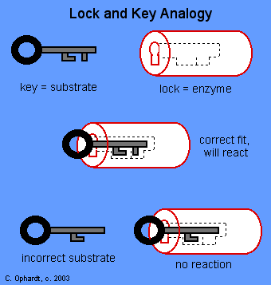
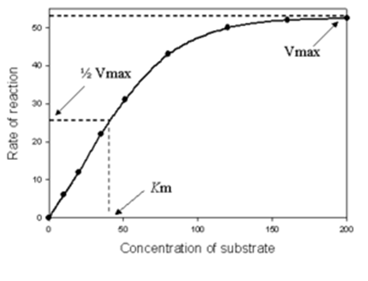
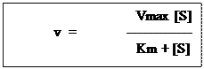

BIC 101 :: Lecture 16 :: MECHANISM OF ENZYME ACTION

- A chemical reaction such as A ----> P takes place because a certain fraction of the substrate possesses enough energy to attain an activated condition called the transition state.
- This transition state is at the top of the energy barrier separating the reactants and products.
- The rate of a given chemical reaction is proportional to the concentration of this transition state species.
- The energy of activation is the amount of energy required to bring all the molecules in 1 mole of a substance at a given temperature to the transition state.
- Enzymes combine transiently with the substrate to produce a transition state intermediate having a lower energy of activation than the uncatalysed reaction. Thus, they accelerate chemical reactions by lowering the energy of activation
Example
H2O2 ---------> H2O + (O)
Catalase
| Reaction condition | Activation energy (KCal mol-1) |
Uncatalysed |
18 |
Catalysed by colloidal Pt |
13 |
Catalysed by catalase |
7 |
It is generally believed that the catalytic reactions occur in at least two steps.
Step 1: A molecule of enzyme(E) and a molecule of substrate(S) collide and react
to form an intermediate called the enzyme-substrate complex (ES).
Step 2: The decomposition of ES complex to give product(s) and the active enzyme
[S] + [E] ----------> [ES] ---------> P+[E]
The formation of an ES complex affords a lower activation energy.
Active site
- The substrate binding site in the enzyme is referred as active site.
- The functional groups that are essential for the formation of ES complex occur at a specific location on the surface of the enzyme molecule.
- This section of enzyme where substrate binding and transformation of substrate to product occurs is called as active site.
- Many attempts have been made to implicate specific amino acid residues (side chain or R groups) as being part of the active site of various enzymes.
- Some of the amino acids occurring at the active site of enzymes are hydroxyl
group of serine, sulfhydryl group of cysteine, imidazole group of histidine and carboxyl groupof aspartic acid.
Two theories were proposed to explain the mechanism of enzyme action.
1. Fischer’s lock and key theory (Rigid template model)
- During 1890, Emil Fischer proposed this theory
- According to this, the active site possesses a unique conformation which is complementary to the structure of the substrate thus enabling the two molecules to fit together in much the same way as a key fits into a lock

- An unfortunate feature of this model is the implied rigidity of the catalytic site.
2. Koshland’s induced-fit theory
- Koshland had advocated a theory to account for the specificity of enzymes.
- He postulated that the essential functional groups on the active site of the free enzyme are not in their optimal positions for promoting catalysis.
- When the substrate molecule is bound by the enzyme, the catalytic groups assume favourable geometrical position to form the transition state.
- The enzyme molecule is unstable in this active conformation and tends to revert to its free form in the absence of substrate.
- In the induced fit model, the substrate induces a conformational change in the enzyme which aligns the amino acid residues or other groups for substrate binding, catalysis or both.
Factors affecting enzymatic reaction
The factors that mainly influence any enzyme-catalysed reaction are:
1. Substrate concentration
2. Enzyme concentration
3. Temperature
4. pH
5. Inhibitors
Other factors such as state of enzyme (oxidation), time and activators also affect enzyme-catalysed reaction to certain extent.
Substrate concentration
- Keeping the factors such as pH, temperature and enzyme concentration at optimum levels, if the substrate concentration is increased, the velocity of the reaction recorded a rectangular hyperbola.
- At very low substrate concentration the initial reaction velocity (v) is nearly proportional to the substrate concentration (first order kinetics).
- However, if the substrate concentration is increased the rate of increase slows down (mixed order kinetics).
- With a further increase in the substrate concentration the reaction rate approaches a constant (zero order-reaction where velocity is independent of substrate concentration).
- At initial point, eventhough the substrate molecules are present in excess than enzyme on molar basis, not all the enzyme molecules present combine with the substrate.
- Hence, increasing the substrate concentration will increase the amount of enzyme associated with substrate as ES and thus v will depend on [S].
- At Vmax, all the enzyme molecules are saturated with substrate molecules so that further increase in [S] cannot result in increased reaction rate.
- Michaelis-Menten derived an equation to explain this type of behaviour.


[S] = Substrate concentration Vmax = Maximum velocity
v = Velocity of the reaction
At half maximal velocity [S] = Km
i.e Vmax Vmax [S]
-------- = -------------
2 Km+[S]
Km + [S] Vmax [S]
----------- = ----------
2 Vmax
Km + [S] = 2 [S]
Km = 2 [S] – [S] = [S]
Hence, Michaelis - Menten constant, Km, is defined as the substrate concentration at half maximal velocity and is expressed as mole per litre.
- The Michaelis-Menten equation can be algebraically transformed into more useful way to plot the experimental data.
- Lineweaver and Burk have taken the reciprocal of both [S] and v of the Michaelis-Menten equation to give
1 Km 1 1
--- = ------ ------ + -------
v Vmax [S] Vmax
- A plot of 1/v versus 1/ [S] (the double reciprocal) yields a straight line.
- This line intercept X-axis at -1/Km and Y-axis at 1/Vmax.
- The slope of the line is Km/Vmax.
- The Lineweaver-Burk plot has the great advantage of allowing more accurate determination of Vmax and Km
Significance of Km
i. Km value may vary with substrate.
ii. An enzyme whose Km is very low will have a high degree of affinity for its
substrate
Enzyme concentration
- When compared to substrate concentration, the concentration of enzyme is always very very low on molar basis.
- Hence, increasing the enzyme concentration will always increase the reaction rate
Temperature
- The velocity of enzyme-catalysed reactions roughly doubles with a 10oC rise in temperature over a limited range of temperature
- Enzymes, being proteins, are denatured by heat and become inactive as the temperature increases beyond a certain point.
- Most of the enzymes are inactivated at temperatures above 60oC.
- The temperature at which the reaction rate is maximum is known as optimum temperature
pH
- Most enzymes have a characteristic pH at which their activity is maximum; above or below this pH, the activity declines
- The pH affects the ionic state of the enzyme and frequently that of the substrate also.
- If a negatively charged enzyme (E-) reacts with a positively charged substrate (SH+), ESH is formed.
- At low pH values, E- will be protonated and ESH is not formed.
- Similarly, at very high pH values SH+ will ionize and lose its positive charge.
E- + SH+ ------> ESH
acidic pH
E- + SH+ ------> EH + SH+ --------> No ESH formation
alkaline pH
SH+ ----------> S + H+ + E- --------> No ESH formation
- Another important factor is the change in conformation (denaturation) of enzyme at extreme pH values.
Inhibitors
- Compounds that have the ability to combine with certain enzymes but do not serve as substrates and therefore block catalysis are called inhibitors.
- The important type of inhibitors are competitive and noncompetitive inhibitors.
Competitive inhibitor
- Any compound which possessess a close structural resemblance to a particular substrate and which competes with that of substrate for the same active site on the enzyme is called as competitive inhibitor.
- The inhibitor is not acted upon by the enzyme and so remains bound to the enzyme preventing the substrate to bind.
- This is a reversible process.
- It depends upon the relative concentration of substrate and inhibitor.
- Competitive inhibition can be completely reversed by addition of large excess of substrate
high inhibitor concn.
E + I ----------------------> E I
<----------------------
high substrate concn.
Eg. the enzyme, succinate dehydrogenase converts succinate to fumarate.
For this reaction, malonic acid is a competitive inhibitor as it structurally resembles that of succinate
- In case of competitive inhibition, Km is increased but Vmax is not altered.
{kind=link}
Non-competitive inhibitor
- Non-competitive inhibitors bind to a site other than the active site on the enzyme often to deform the enzyme, so that, it does not form the ES complex at its normal rate.
- Once formed, the ES complex does not decompose at the normal rate to yield products.
- These effects are not reversed by increasing the substrate concentration.
E + I -------> EI
ES + I ------> ESI
- Some enzymes possessing an essential -SH group are non-competitively inhibited by heavy metal ions (Hg2+, Pb2+).
- Some metalloenzymes are inhibited non competitively by metal chelating agents like ethylene diamine tetraacetic acid(EDTA).
- Inhibitors are used as tools to probe the mechanism of enzyme - catalysed reactions and as therapeutic agents.
- In case of noncompetitive inhibition, Vmax is lowered but Km is not altered
Uncompetitive inhibitor
- In case of uncompetitive inhibition, the inhibitor binds only to free enzyme and not to the enzyme substrate [ES] complex
| Download this lecture as PDF here |